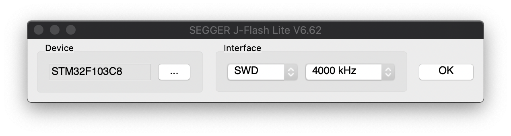

Build and Flash¶
Build¶
Instructions for building the firmware.
Set Toolchain Path¶
Specify ARM toolchain location. Set TOOLCHIN_PATH in CMakeLists.txt to point to your toolchain’s bin directory
SET(TOOLCHIN_PATH "/opt/gcc-arm-none-eabi-9-2019-q4-major/bin")
Run CMake¶
Navigate into project root directory. Create a build directory, then enter the directory.
mkdir build
cd build
Run CMake
cmake ..
CMake should exit with
-- Configuring done
-- Generating done
-- Build files have been written to: /…/windrider/build
Compile the Project¶
From the build folder run make.
make -j4
Build folder will now contain three firmware files windrider.bin, windrider.hex, windrider.elf — these are compiled binary blobs ready to be flashed to the microcontroller.
Flash¶
J-Link¶
There are two ways to upload firmware using J-Link - Command Line and GUI.
JFlashLite GUI¶
Run JFlashLite with the following settings.
{kind=link}
In the next prompt select windrider.hex as data file. Click Erase, then Program.
JLinkExe Command Line¶
Navigate to build folder. Connect to target.
JLinkExe -device "STM32F103C8" -if SWD -speed 4000 -autoconnect
Reser, erase, load, verify.
r
erase
loadbin "windrider.bin" 0x08000000
verifybin "windrider.bin" 0x08000000
Run¶
Connect host computer to WindRider board via USB. Use any modem control software (e.g. minicom) or serial port API (e.g. pyserial).
To print a full list of commands and arguments type ? and hit return. A list of available commands is available here_.
Some examples of valid commands:
solenoid 1 5 20 ## Enable impactor at channel 1, on_time = 5ms, off_time = 20ms.
servo 0 100 ## Set servo at channel 0 to 100 deg.